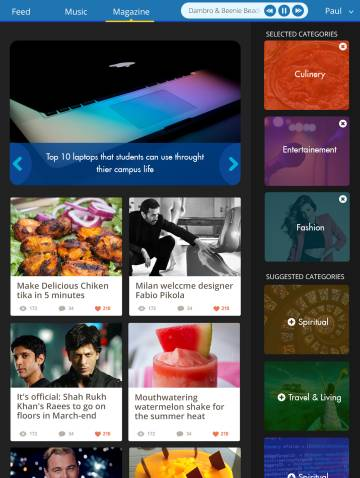
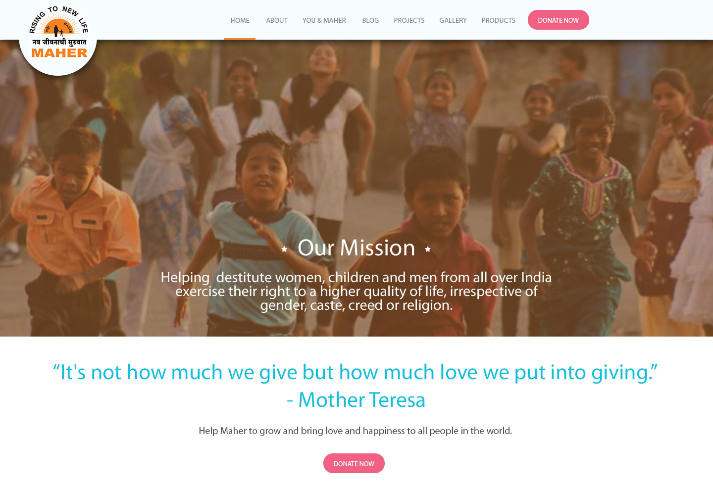

Illustrator
Fluid Interactions
A social platform built for application SocioMob



Conversion Rate
Stratergical Placing of CTA button help increases converion rate,
Website designed for ngo Maher Ashram.

Want to know more?
Get my cvSkills
I have a passion for identifying, scrutinizing, improving, and streamlining complex work processes through highly organised thinking and analysis. While my main strength lies in communication, I am also a flexible team player who thrives in environments requiring ability to effectively prioritize and juggle multiple concurrent projects. I find great joy in learning and experimenting new things and exploring the unknown.
Photoshop
After Effects
CSS
Testimonials
"Paul has always been a thorough professional and keen to come up with naive ideas. As a Web designer he has been instrumental in designing interfaces and application"
"Paul has always been a thorough professional and keen to come up with naive ideas. As a Web designer he has been instrumental in designing interfaces and application"
"Paul has always been a thorough professional and keen to come up with naive ideas. As a Web designer he has been instrumental in designing interfaces and application"
All our dreams can come true if we have the courage to pursue them
- Walt Disney
Want to know more?
Get my cv